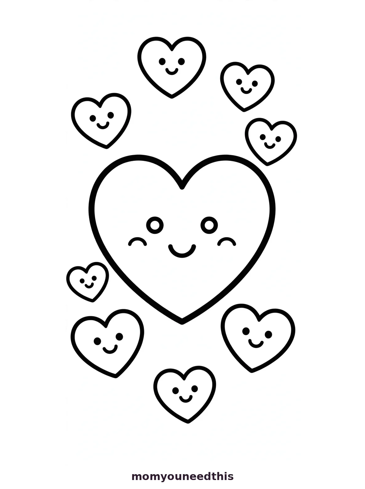
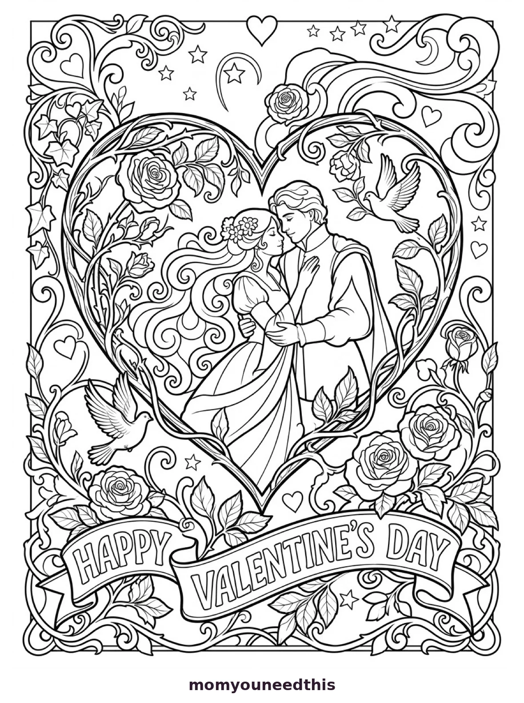
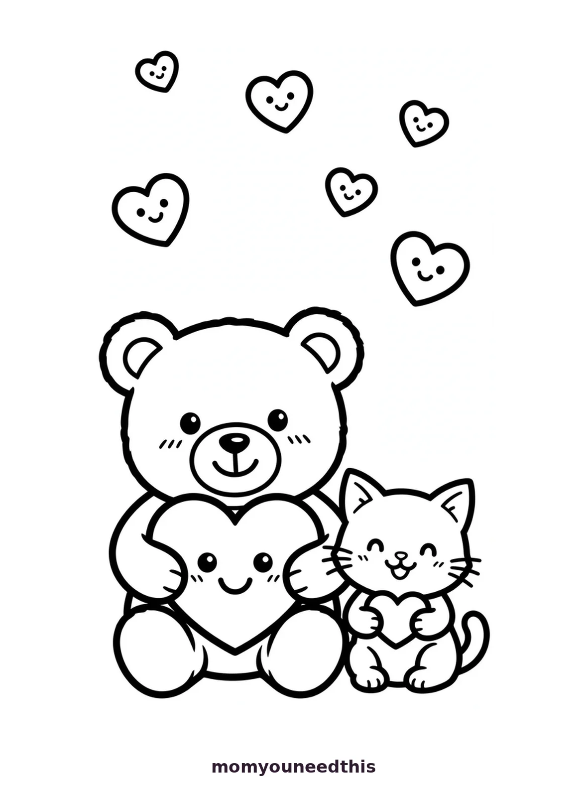

Free Valentines Day Coloring Pages
Looking for free valentines day coloring pages? Download our free original Valentine's Day coloring page below — no signup needed. Just tap download, print at home, and let the coloring fun begin! These valentines day coloring sheets include simple pages for toddlers and more detailed pages for older kids.
Quick Answer
These free valentines day coloring pages come in four sheets for different ages: a simple teddy bear and kitten page for toddlers, a medium sheet, and a detailed design for older kids. Little ones practice coloring and fine motor skills while making something sweet to give away. Download and print at home — free, no signup.
At a Glance
- Ages: Toddlers and preschoolers
- Activity: Valentine’s Day coloring pages to print and color
- Skills: Coloring, creativity and fine motor practice
- Format: Printable coloring pages (PDF)
- Cost: Free, no signup
❤️ How To Use This Page
- Browse the list and pick a coloring page your child will love.
- Tap the download button to save the free coloring page to your device.
- Print on letter-size paper — print a few different designs for variety.
- Color together with crayons or markers and display the favorites.
💕 Valentine's Day Coloring Pages

🎨 Download Your Free Valentine's Day Coloring Page
A cute, original valentine's day coloring page made for little hands — bold outlines, big spaces, zero signup.
⬇️ Download Free Coloring Page 🖨️ Print🎁 Free printable for toddlers & preschoolers
💌 Valentine's Day — Detailed Coloring Page for Older Kids
A detailed Valentine's Day coloring page with lots of small details — a couple in a heart, roses, doves, and a Happy Valentine's Day banner. Harder than the simple page above, best for older kids.
⬇️ Download Detailed Valentine's Day Page 🖨️ Print Detailed Page🎁 Free printable for older kids

💝 Valentine's Day — Medium Coloring Page
A medium Valentine's Day coloring page — the same romantic couple in a heart with roses, doves, and a Happy Valentine's Day banner, with simpler lines. A step up from the simple page above, not as hard as the detailed one.
⬇️ Download Medium Valentine's Day Page 🖨️ Print Medium Page🎁 Free printable for kids ready for more detail

🧸 Valentine's Animals — Teddy Bear and Kitten Coloring Page
A simple Valentine's Day coloring page — a cute teddy bear holding a big heart and a small kitten holding a tiny heart, with small hearts floating around them. Bold outlines and big spaces, perfect for little hands.
⬇️ Download Valentine's Animals Page 🖨️ Print Animals Page🎁 Free printable for toddlers & preschoolers
❤️ Sweet Ideas for free valentines day coloring pages
Valentine's Day is sweeter with crayons, and free valentines day coloring pages make it easy to celebrate. Hearts, cards, flowers, cupids, and friendly animals give kids plenty to color and share — each sheet has one big Valentine scene with bold outlines for little hands.
Print a page for each child and color together. While you color, talk about kindness and the people you love — free valentines day coloring pages are a gentle way to practice gratitude. Finished pages make heartfelt cards: fold one in half, write a short note inside, and give it to grandparents or teachers.
For toddlers, one big heart is the perfect first page. Older kids can handle detailed cards with patterns and messages to color in. A heart-shaped card is a sweet gift, and free valentines day coloring pages fold neatly into envelopes.
Set up a little coloring station with pink and red crayons, stickers, and a stack of pages. A quiet coloring afternoon is a lovely Valentine's tradition. For a classroom party, print a set of free valentines day coloring pages so every child can color a card — finished sheets make sweet party favours.
Grab your free valentines day coloring pages today and make something sweet together.
See Valentine printable for more.

💌 Turn It Into a Valentine Card
These valentines day coloring pages become real cards with one fold. Color the page first, then fold it in half so the picture is on the front. Write a name inside in big letters, and decorate the border with small hearts, dots, or stars in pink and red.
Who gets one? For grandparents, write "I love you" and add a hand-drawn heart. For a teacher, write "Thank you for teaching me" and sign your name. For a sibling, write "You are my favorite brother" or "You are my favorite sister" plus one thing you like doing together. For a friend, write "Happy Valentine's Day" and draw both of you holding hands.
Slip the card into an envelope, or fold a plain sheet of paper around it and tape the edge. A card your child colored and signed beats a store-bought card every time.
🎉 Valentine's Classroom Party
These valentines day coloring pages work well for a classroom party because every child gets the same starting point and a different result. Print one page per classmate, plus three or four extras for spills, late arrivals, or a child who wants a second try.
Before the party, write each child's name on a small tag or sticky note and tape it to the back of a page, so handing them out takes seconds. Set out crayons, markers, stickers, and envelopes in the middle of each table — one shared set per table keeps things simple.
Sorting helps too: stack the pages by design (hearts in one pile, animals in another) and let each child pick a pile. After coloring, kids can trade pages or slip them into envelopes for friends. Keep a few blank pages aside for the teacher — most teachers love a colored card too.
🎁 Who Gets One?
These valentines day coloring pages make gifts for the people your child already knows. For grandparents, mail the finished page in an envelope with a short note: "I colored this for you." Grandparents keep these. It is one of the easiest valentine day preschool ideas: color it, sign it, and send it.
For a teacher, write "Thank you for being my teacher" on the back and hand it over at the end of the day. For siblings, trade pages — each child colors one for the other, then swaps at dinner. For friends, swap at school: color one for a friend, get one back, and tape both to the fridge.
One page per person is plenty. If your child wants to make more, print a fresh batch and start again — the file stays on your phone, so reprinting takes a minute.
❓ Valentines Day Coloring Pages FAQ
Are these valentines day coloring pages really free?
Yes — the free valentines day coloring pages on this page are free original printables from MomYouNeedThis. Nothing here costs anything.
What ages are these coloring pages for?
They are perfect for toddlers, preschoolers, and young kids. Choose simpler designs for little ones and more detailed pages for older kids. That is what makes them easy valentine preschool activities for home or classroom.
How do I print a coloring page?
Tap the download button above to save the free coloring page, then print it. Regular letter-size paper works perfectly. The print button opens the full-size page in a new tab if you prefer to print from there.
How many valentines day coloring sheets can I print?
As many as you like — there are four designs on this page, from a simple teddy bear and kitten page for toddlers to a detailed design for older kids, and all of them are free to download and print.
Can I use these valentine colouring pages printable at home?
Yes — download any design on this page and print it on letter-size paper at home. They are all free, with no signup needed.
🔗 More Free Printables You’ll Love
- Free Alphabet Coloring Pages Free printable alphabet coloring pages for little learners.
- Free Letter B Coloring Pages Free printable letter b coloring pages for little learners.
- Free Letter C Coloring Pages Free printable letter c coloring pages for little learners.
- Free Math Coloring Pages Free printable math coloring pages for little learners.